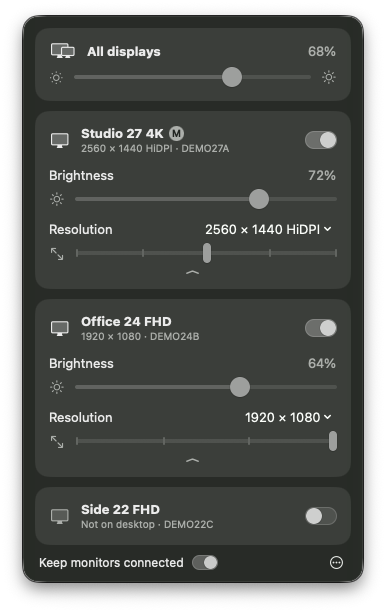

Keep external monitors connected on your Mac
DisplayLatch is a free, open-source menu-bar app. If an external monitor stays black or undetected after sleep, it brings it back on its own. It also controls monitor brightness over DDC and lets you disconnect a display without unplugging it.

Monitors that stay connected
After sleep, wake, a restart or a replug, macOS sometimes leaves a monitor dark even though it still detects it. DisplayLatch puts it back on the desktop in the same position. How it works.
Disconnect without unplugging
One switch takes a display off the desktop and the same switch brings it back, for free. Guide.
Real brightness control
It changes the monitor's own backlight over DDC/CI, per monitor or with one slider for all of them. Guide.
Resolution and CLI
A resolution slider for each display, plus a displaylatch command for scripts: list, fix, brightness all 40.
Tiny and private
Native Swift, no Electron, no account, no telemetry. The only network request is an optional update check.
Free and open source
MIT licensed. Read the code, build it yourself, or compare it with BetterDisplay.
Frequently asked questions
Is DisplayLatch free?
Yes. DisplayLatch is free and open source under the MIT license. It has no paid tier and no account.
Which Macs does DisplayLatch support?
Macs with Apple silicon (M1, M2, M3, M4 and later) running macOS 14 Sonoma or later.
Does DisplayLatch collect data?
No. Its only network request is an optional daily check of the latest GitHub release, used to show an update notice.
Get DisplayLatch, free
Native macOS menu-bar app, about 1.5 MB, open source (MIT). Apple silicon, macOS 14+.